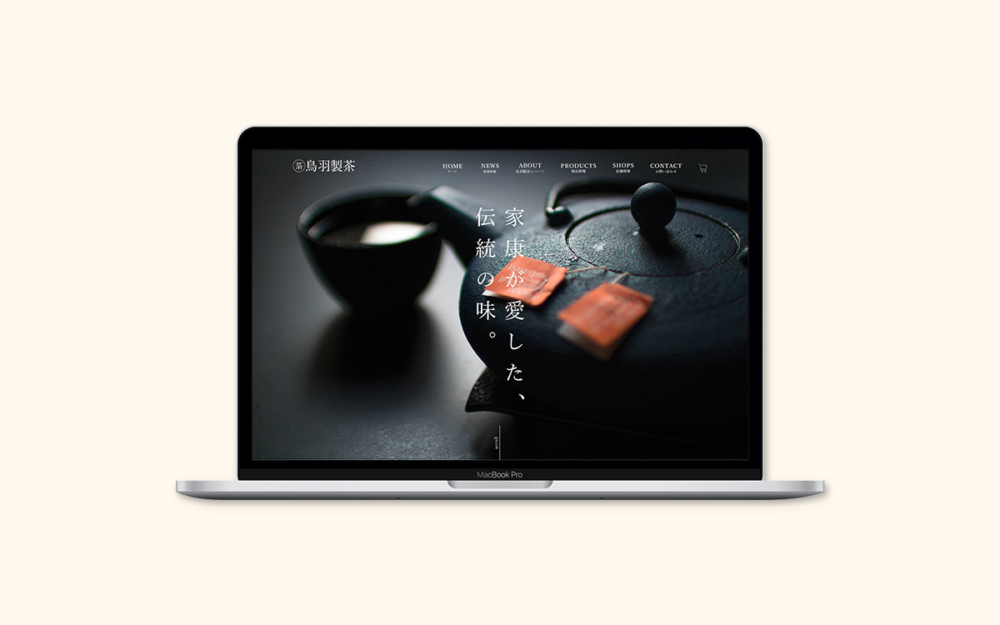
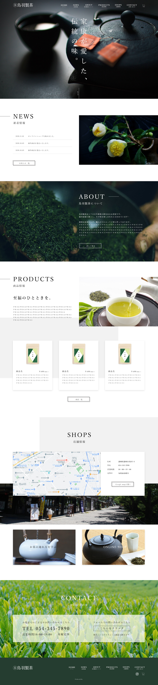

| 作品名 | 鳥羽製茶サイト（架空） |
|---|---|
| 制作期間 | 約1週間 |
| 担当作業 | デザイン（トップページのみ） |
| 制作の目的 | 企業情報の発信、鳥羽製茶について知ってもらうとともに、ユーザーをネットショップへ誘導し売り上げを向上させる |
| ターゲット | お茶好きな人、お茶の選び方にこだわりのある人 |
| 作品説明 | 高級感や和風をイメージして明朝体を使用しました。写真も高級感が出ているものを使用しました。ボタンは枠をずらしたブロックにし、少し和風を意識しました。また写真のみでは少々メリハリにもかけるのではと考え、背景色をずらして配置するなど工夫をしました。 |
| 使用ツール | Photoshop,Illustrator |
トップページ（PC）
